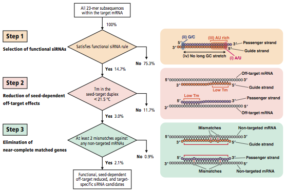

siDirect 2.0 is a web server for providing efficient and target-specific siRNA design for mammalian RNAi. In this new version, the siRNA design algorithm has been extensively updated to eliminate off-target silencing effects by reflecting our recent finding that the capability of siRNA to induce off-target effect is highly correlated to the thermodynamic stability of the 'seed' duplex (reference 6). The updated siRNA design algorithm based on such mechanistic features is combined with the reliable algorithms previously reported.
Overall flow of siRNA selection in siDirect 2.0 is illustrated below. All possible 23-mer subsequences, corresponding to the complementary sequence of 21-nt guide strand and 2-nt 3′ overhang of the passenger strand within the target sequence, are generated and filtered in three selection steps.
In the first step, highly functional siRNA sequences were selected using our algorithm (reference 3). We have revealed that efficient RNAi could be induced by the siRNAs that satisfies the following three sequence conditions simultaneously: A/U at the 5′ terminus of the guide strand; G/C at the 5′ terminus of the passenger strand; at least 4 A/U residues in the 5′ terminal 7 bp of the guide strand. In addition, G/C stretch longer than 9 bp should be absent. The proportion of functional siRNA sequences selected by this algorithm is 14.7% of all human 23-mer sequences generated from RefSeq 30.
We have found that the off-target effect is highly correlated with the thermodynamic stability or Tm of the seed-target duplex, which is formed between the nucleotides positioned at 2-8 from the 5′ end of the siRNA guide strand and its target sequence (reference 6). In the second step, to avoid off-target effect, Tm for the seed-target duplex was calculated using the nearest neighbor model and the thermodynamic parameters for the formation of RNA duplex. As shown in our previous report, calculated Tm of 21.5 ºC may be a benchmark to discriminate almost off-target-free seed sequences from the off-target-positive ones, and thus used as the initial standard. Furthermore, it has been revealed that RNAi silencing is occasionally induced by the passenger strands of functional siRNAs, and that the passenger strands also take part in the seed-dependent off-target gene silencing. Thus, siRNAs whose seed-target Tm is below 21.5 ºC for both guide and passenger strands were selected in this study. In consequence, 3.0% of all human 23-mer sequences remained available. Calculated Tm value for each siRNA is shown in the siDirect 2.0 output page.
Several studies have indicated that the effect of single-base mismatches between the siRNA guide strand and the target mRNA varies, according to the positions of the mismatch and/or the sequence of siRNA. However, it is obvious that even when the Tm value of the seed-target duplex is sufficiently low, the target gene silencing can still take place if the non-seed region is completely complementary. Therefore, in the third step, siRNAs that have near-perfect matches to any other non-targeted transcripts were eliminated. In siDirect 2.0, off-target searches are performed for 19-mer sequences at positions 2-20 of both strands of the siRNA duplex, because these 19 nucleotides are thought to be involved in target mRNA recognition. Since widely-used BLAST tends to overlook near-perfect match candidates frequently, we used our fast and sensitive algorithm (reference 7). In addition, all of the near-perfect match hits are precomputed for all the functional human siRNAs to accelerate the computational performance. Precomputed results are stored in the memory engine of MySQL database. This makes it possible to return the list of siRNA candidates within a few seconds. The output page includes the minimum number of mismatches against any near-perfect match candidates for each siRNA. By clicking the individual siRNA, a detailed list of candidate genes will appear. By default, siRNA sequences that have at least two mismatches to any other non-targeted transcripts are selected.
Researchers from academic organizations are eligible to freely use siDirect sequences for academic purpose. If users from academic, non-profit, or commercial organizations design or utilize siDirect sequences for any commercial purposes, such as the inclusion to a commercial product sake or profits research, they are required to make licensing agreements by contacting license@rnai.jp.
siDirect v.2.0 | Last modified on Jan 1, 2010.